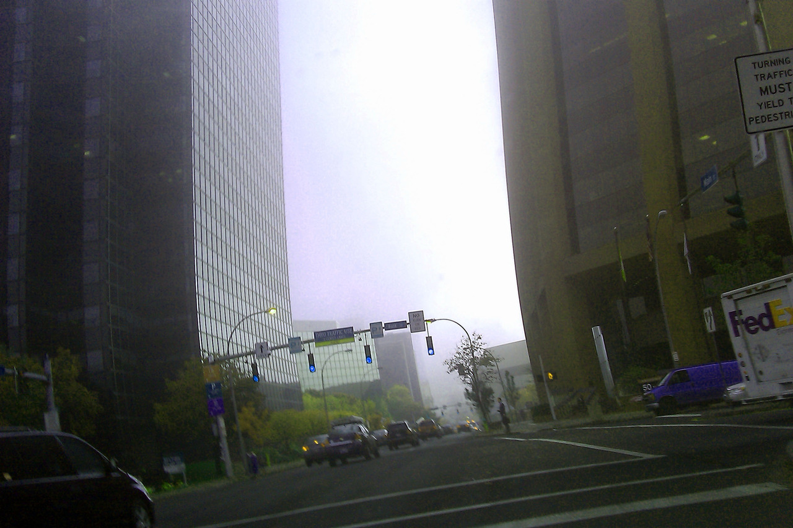

- The city of fog -
White Plains, New York
or Dream White Plains, New York?
All cities are recursive
within the dream
there is an entire copy of the city, down to the smallest detail
(zoom in further)
including a person who dreams another iteration of the dream city
(now zoom way out)
the real city is an iteration of